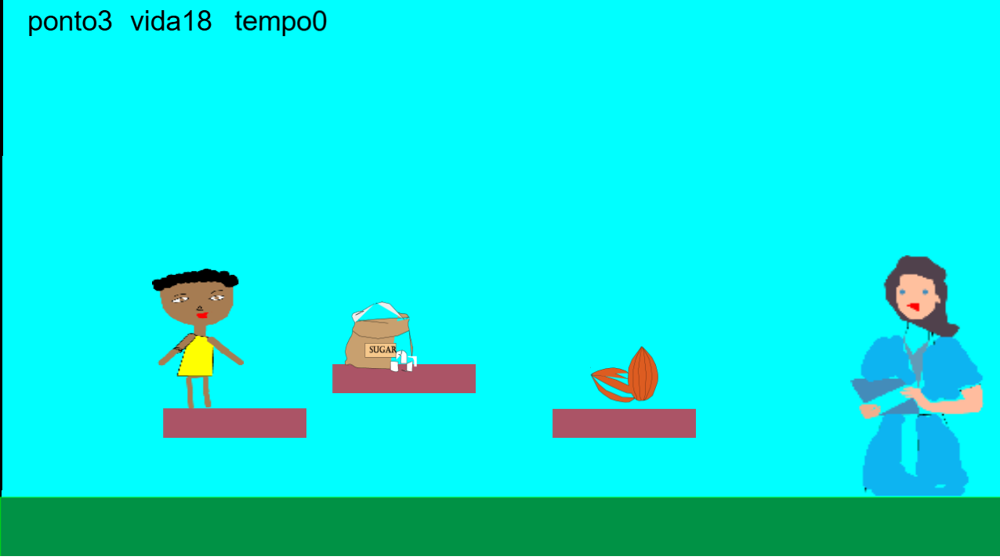
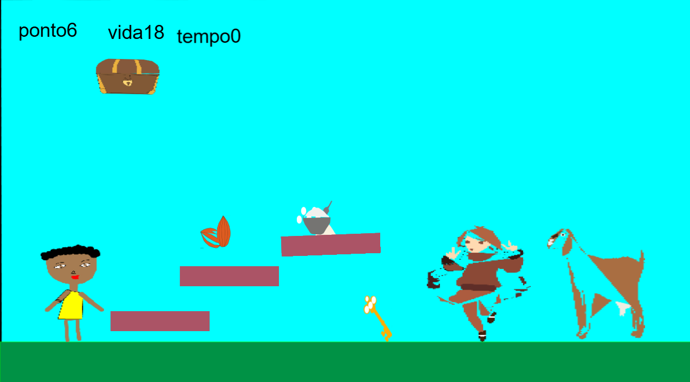

Projeto Integrador
Este webgame é o meu projeto integrador. Como todo trabalho que desenvolvemos no curso ele tem início, meio e fim. Passamos por várias etapas e aprendemos vários conhecimentos, não só nessa qualificação, mas todas as outras fazem parte do processo para chegarmos até aqui.
Festa de Aniversário


Para acessar o jogo e poder jogar bastante clique no link abaixo:
Acesse o jogo com este link: Festa de Aniversário
História - Festa de Aniversário
Maria vai em uma consulta medica e descobre que tem intolerância a lactose, mas ela tem a sua festa de aniversário hoje, assim vai ser uma corrida contra o tempo para trocar o bolo antes da festa e ao longo da jornada ela vai aprender sobre o tema.